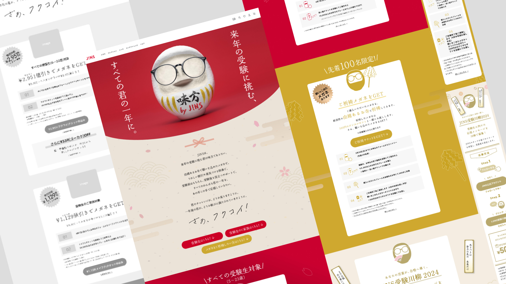
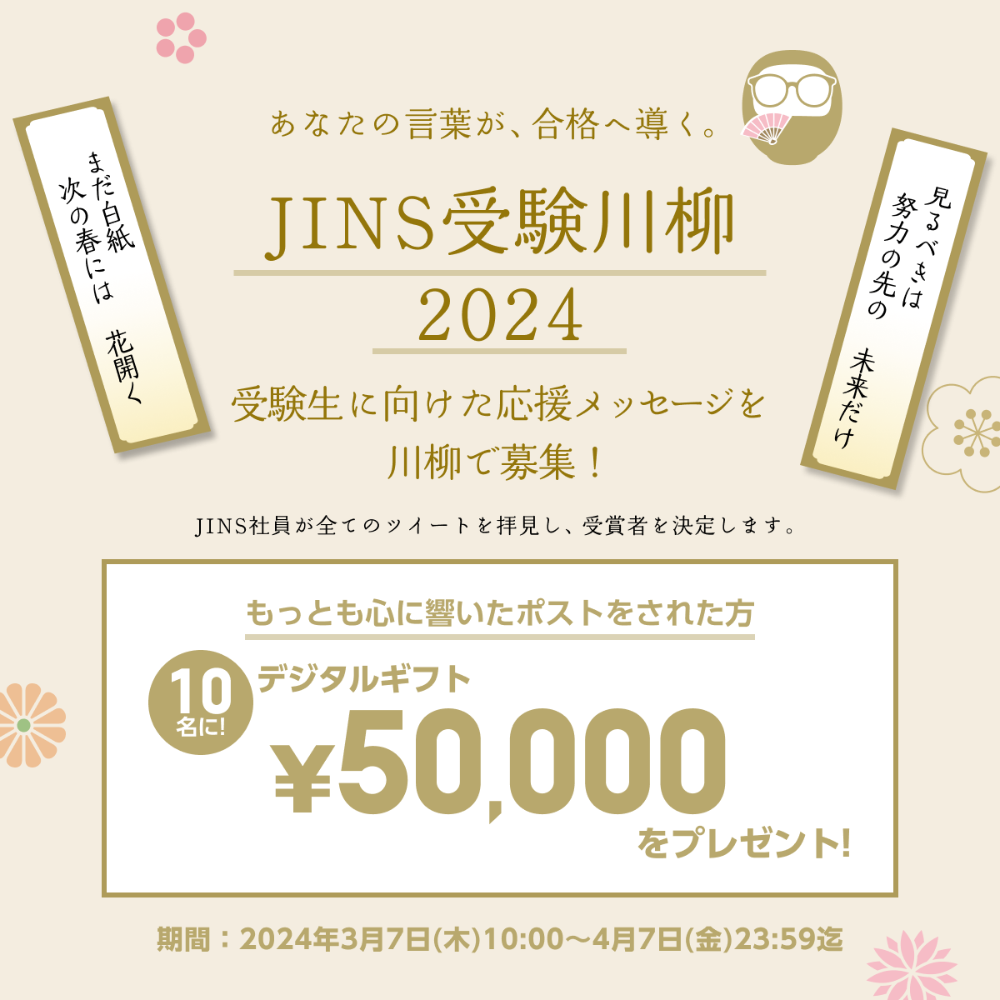
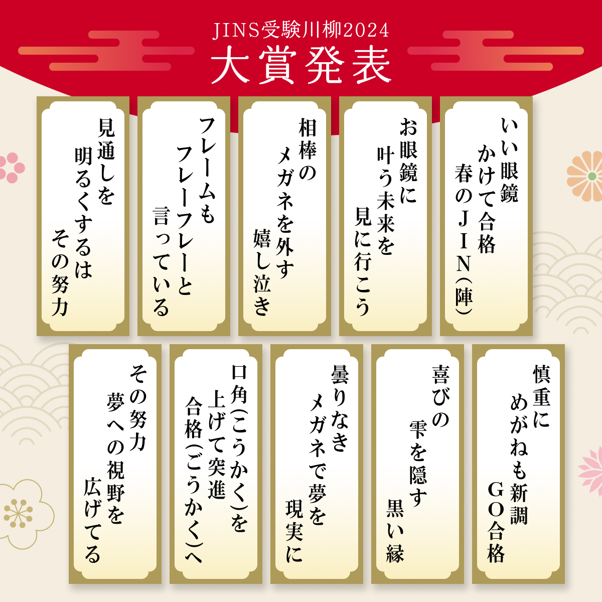

受験生応援・販売促進キャンペーンのLPページの制作を担当。メインビジュアルをもとに、ワイヤーフレームからデザインまで担当しました。

受験生とその親御様を対象とした、メガネの販売促進キャンペーンです。「受験生を応援する」というブランドメッセージを前面に出しながら、商品購入・サービス認知への導線を設計しました。
SNSバナーデザイン
LPと連動したSNS広告バナーも制作。クリック率を意識したビジュアル設計で、ターゲットへの訴求力を高めています。


制作について・工夫した点
メインビジュアルのみを先方からいただき、リリースまで約2週間というタイトスケジュールでの制作でした。広告代理店という直受けの強みを活かし、クライアントの細かな要望にも迅速に対応。「JINSらしさとは？」というブランドイメージの解釈に最も時間をかけました。ブランドの世界観を損なわず、かつ受験生という特定ターゲットに響くデザインのバランスを追求しました。